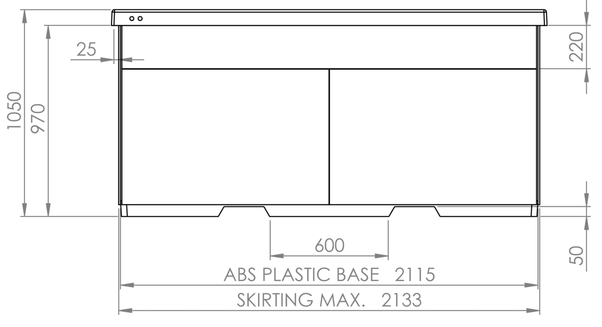
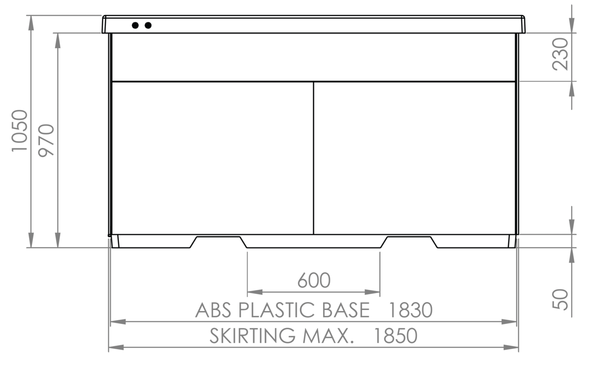
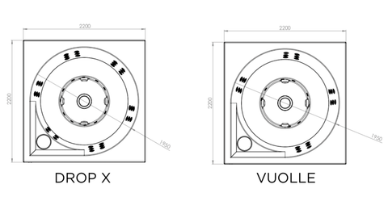
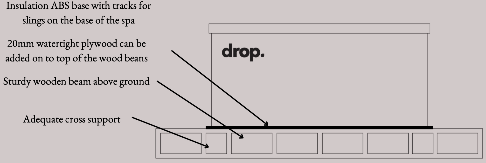
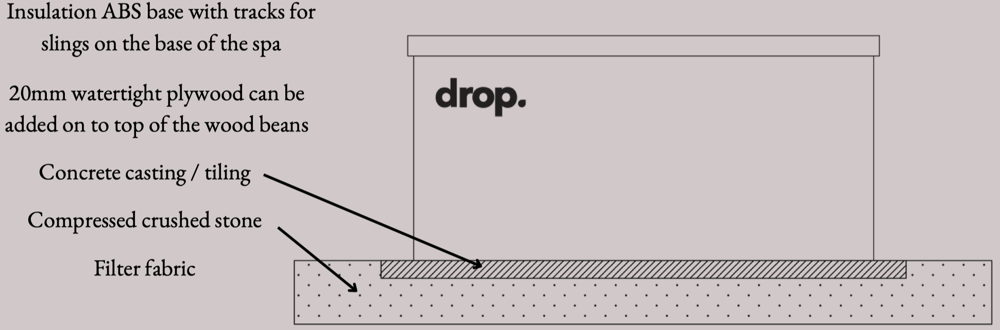
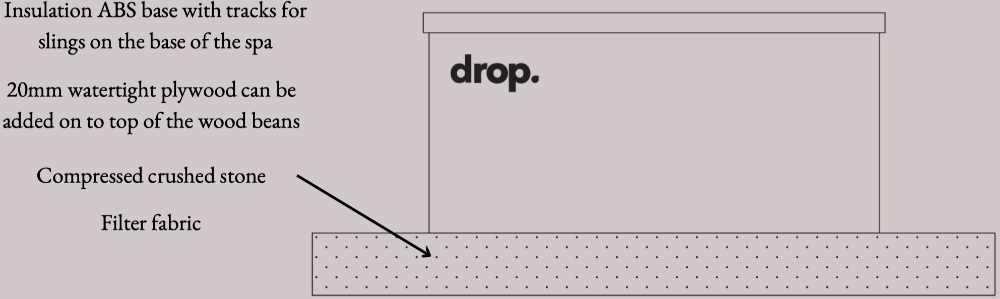

Instalacja
Wymiary
Upuść X, Vuolle, upuść S, Lähde, Lampi

Vuolle Compact/Lampi Compact

Z każdej strony basenu powinno być co najmniej 50 cm wolnej przestrzeni, aby umożliwić wykonanie ewentualnych prac konserwacyjnych.
Rozmieszczenie dysz w Drop X i Vuolle.

W razie potrzeby skontaktuj się z nami , aby uzyskać pomoc w zaplanowaniu lokalizacji spa. Umiejscowienie spa musi być dobrze zaplanowane pod kątem komfortu i bezpieczeństwa użytkowania. Jeśli to możliwe, spa powinno być umieszczone na otwartej przestrzeni. Liście spadające z drzew i inne zabrudzenia mogą łatwo przedostać się do wody w spa podczas kąpieli.
Spa należy instalować i przechowywać w taki sposób, aby opierało się na ramie. Nie należy opuszczać spa w celu oparcia go na górnej krawędzi ani stawiać spa na przykład na tarasie w taki sposób, aby górna krawędź utrzymywała ciężar spa. Plany są poglądowymi przykładami instalacji.
Projektując podłoże należy uwzględnić wpływ mrozu.
Producent nie ponosi odpowiedzialności za szkody spowodowane nieprawidłowo zamontowanym spa.
FUNDACJA



Właz serwisowy
Podstawa spa musi być pozioma, nośna i pozioma. Najbardziej odpowiednie podstawy są wykonane z betonu, żwiru, drewna lub innego twardego materiału podłoża. Podstawa musi wytrzymać ciężar 2500 kg bez zapadania się i deformacji.Wokół wanny spa na świeżym powietrzu nie może być mniej niż 50 cm przestrzeni na wykonanie wszelkich niezbędnych czynności serwisowych. Musi istnieć możliwość swobodnego otwierania włazów serwisowych znajdujących się z boku spa. Jeśli chcesz zatopić spa w tarasie, konieczne będzie wykonanie osobnego włazu serwisowego na tarasie. Właz serwisowy musi umożliwiać otwarcie paneli bocznych i zapewniać wystarczająco dużo miejsca, aby w razie potrzeby móc pracować obok spa.
Jeśli otaczasz spa listwami przypodłogowymi, wszystkie boczne drzwi muszą być dostępne, aby umożliwić konserwację.
Filtr można wymienić bez otwierania drzwi serwisowych.
ODBIÓR DOSTAWY
Przed potwierdzeniem odbioru proszę sprawdzić paczkę na zewnątrz. Wszelkie zaobserwowane uszkodzenia zewnętrzne powstałe podczas transportu należy natychmiast zgłosić kurierowi lub naszemu działowi obsługi klienta. Wszelkie uszkodzenia powstałe podczas transportu należy zgłosić w ciągu maksymalnie siedmiu (7) dni w formie pisemnej na adres drop@drop.fi / dystrybutor Drop.
Jeżeli w dostarczonym produkcie występują wady lub braki, sprzedawca dokona wymaganych zmian w produkcie lub dostarczy klientowi nowy produkt zamienny. O brakach towaru należy powiadomić sprzedawcę w terminie 14 dni od dnia otrzymania towaru.
Spa jest dostarczane w pozycji pionowej ciężarówką z przyczepą użytkową, chyba że uzgodniono inaczej. Usuń plastikowe opakowanie, karton i wszelki inny sprzęt lub części dostarczone wewnątrz spa przed obróceniem spa do prawidłowego położenia. Aby obrócić spa do właściwej pozycji, potrzeba czterech do sześciu (4-6) osób. UPUSZCZAĆ
INSTALACJA I URUCHOMIENIE
Do przeniesienia spa potrzeba około czterech do sześciu (4-6) osób. Podczas przenoszenia spa należy zachować szczególną ostrożność, aby zapobiec wypadkom. Kiedy spa jest opuszczane na przykład do otworu na tarasie, zaleca się użycie ruchomych pasów, aby zapewnić bezpieczny montaż. Na dnie spa znajdują się rowki do przenoszenia pasków.
Nie pozostawiaj spa wystawionego na działanie promieni słonecznych bez osłony spa lub bez wody.
PROSZĘ ZANOTOWAĆ! Nie podłączaj zasilania do spa, dopóki nie zostanie ono napełnione wodą!
1. Obróć dysze, aż się otworzą.
2. Przed użyciem spa sprawdź, czy wszystkie połączenia gwintowe pomp są dobrze dokręcone. Połączenia gwintowe mogą poluzować się podczas transportu.
3. Napełnij spa wodą, np. za pomocą węża ogrodowego (patrz strona 8, jak napełnić spa) w taki sposób, aby poziom wody wynosił ok. 2,5 m. 10 cm poniżej krawędzi spa.
4. Instalację elektryczną może wykonać wyłącznie elektryk z uprawnieniami. Nie podłączaj zasilania, dopóki spa nie zostanie napełnione wodą. Zobacz Instalacja elektryczna.
5. Po włączeniu zasilania wyświetlacz spa (znajdujący się w komorze sprzętowej) pokaże dane konfiguracyjne, po czym pojawi się tekst RUN | PMPS | PURG | POWIETRZE | -- -- -- -zacznie migać na wyświetlaczu. Ta inicjalizacja będzie trwać 4–5 minut.
6. Jeśli pojawi się komunikat o błędzie HTR | MAJ | BYĆ | SUCHE | -- -- -- -- | CZEKAJ | -- -- -- -- pojawia się na wyświetlaczu w ciągu pierwszych kilku minut, oznacza to, że w pompie znajduje się powietrze. W takim przypadku zapoznaj się z instrukcją czyszczenia śluzy powietrznej.
7. Włącz pompy i sprawdź, czy ze wszystkich dysz wypływa woda. Technologia Przed napełnieniem wanny należy upewnić się, że wszystkie połączenia gwintowe na pompach są dokręcone. Połączenia gwintowe mogą poluzować się podczas transportu.
7
4
1
2
3
6
5
1. System filtrów
2. Dodatkowy grzejnik Balboa 3 kW
3. Jednostka centralna Balboa 3 kW
4. Panel sterowania Balboa
5. Pompa filtrująca Koller 200 W
6. Strefa fal
7. System strumieniowy
Właz serwisowy z DROP izolacją
Instalacja elektryczna
Instalację elektryczną może wykonać wyłącznie elektryk z uprawnieniami. PROSZĘ ZANOTOWAĆ! Nie włączaj zasilania spa, dopóki nie zostanie napełnione wodą!
Zewnętrzne spa należy podłączyć do przyłącza elektrycznego 3 x 16 A, 400 V (prąd) lub 1 x 16 A, 230 V (3 kW Lähde & Lampi). Połączenie elektryczne musi być zabezpieczone wyłącznikiem różnicowoprądowym. Zasilanie elektryczne można przewiercić w dowolnym narożniku bocznicy spa lub w ruchomym rowku paska w podstawie spa. Strona, za którą znajduje się panel sterowania, jest oznaczona na spa.
Spa musi być podłączone do prądu 3 x 16 A, 400 V (prądowe przyłącze elektryczne). Połączenie elektryczne musi być zabezpieczone wyłącznikiem różnicowoprądowym. Zasilanie można przewiercić przez zewnętrzną okładzinę dowolnego narożnika spa lub przez rowek zawiesia w dolnym spa.
PROSZĘ ZANOTOWAĆ! Przewody należy odizolować na długości ok. 20 mm, a uziemienie musi zostać odpowiednio wykonane.
1. Sprawdź, czy spa jest napełnione wodą i czy wszystkie dysze są zalane wodą.
2. Otwórz klapę serwisową.
3. Otwórz jednostkę centralną Balboa (BP21)
4. Podłącz kabel zasilający do centrali.
5. Zamknij klapę serwisową.
Schemat instalacji elektrycznej 6 kW 3 x 16 A, 400 V
Schemat instalacji elektrycznej 3 kW 1 x 16 A, 230 V DROP
Instrukcje dotyczące czyszczenia śluzy powietrznej
Śluza powietrzna powoduje awarię dysz. Śluza powietrzna jest często spowodowana zbyt szybkim napełnieniem spa, co powoduje uwięzienie powietrza w rurach. Uniemożliwia to wstępne napełnienie pompy i prawidłową cyrkulację wody.
1. Otwórz właz serwisowy i lekko odkręć złącze gwintowane na górze pompy.
2. Gdy zacznie wypływać woda, dokręć połączenie i włącz pompę. Pompa będzie pompować przez chwilę, po czym woda zacznie płynąć prawidłowo.
3. Osusz rozlaną wodę i zamknij klapę serwisową. Twoje spa na świeżym powietrzu jest gotowe do użycia. ControlMySpa™ (produkt dodatkowy)
Za pomocą pilota możesz zmieniać ustawienia spa z dowolnego miejsca oraz sprawdzać stan i funkcje spa. Nowa generacja pilota CMS™ wysyła także powiadomienia na Twój telefon komórkowy o wszelkich problemach ze spa. Aby pilot zdalnego sterowania mógł działać, wymaga połączenia Wi-Fi w pobliżu spa.
Spa można również kontrolować za pomocą panelu sterowania znajdującego się w komorze na sprzęt spa.
1. Podłącz jednostkę CMS Gateway Ultra do modemu za pomocą kabla sieciowego i podłącz kabel zasilający do urządzenia.
2. Pobierz aplikację ControlMYSPA ze sklepu z aplikacjami na swoim telefonie. Utwórz nowe konto za pomocą swojego adresu e-mail.
3. Stań obok spa i upewnij się, że zasilanie spa jest włączone.
PROSZĘ ZANOTOWAĆ! CMS można znaleźć 15 minut po włączeniu spa. Jeśli to konieczne, wyłącz zasilanie spa, odczekaj 20 sekund, a następnie włącz ponownie zasilanie.
4. Otwórz w telefonie aplikację STERUJ MY SPA, naciśnij „USTAWIENIA” i postępuj zgodnie z instrukcjami wyświetlanymi na ekranie.
5. Kod CMS to PDS-26134
ROZWIĄZYWANIE PROBLEMÓW
PROBLEM
PRZYCZYNA
Czerwone światło w jednostce CMS Gateway Ultra
Migające czerwone światło w CMS Gateway Ultra
Migające niebieskie światło w urządzeniu CMS Gateway Ultra
Miga zielone światło w CMS Gateway Ultra
Zielone światło w jednostce CMS Gateway Ultra
Urządzenie i spa nie są połączone
Urządzenie i spa są połączone, ale nie ma połączenia z panelem sterowania.
Trwa aktualizacja oprogramowania. Nie wyłączaj zasilania.
Urządzenie i spa są połączone, ale nie ma połączenia z Internetem.
Urządzenie i spa są połączone, a połączenie z Internetem zostało nawiązane. Bez błędów. UPUSZCZAĆ
UŻYTKOWANIE, KONSERWACJA I SERWIS
Spa Drop można napełnić ok. 1500 litrów wody. Należy pamiętać, że poziom wody podnosi się wraz ze wzrostem liczby kąpiących się. Spa napełnia się czystą wodą np. za pomocą węża ogrodowego.
Nigdy nie włączaj urządzenia ani nie pozostawiaj go włączonego, gdy w spa nie ma wody.
Włączaj urządzenie tylko wtedy, gdy:
1. osiągnięto wymaganą ilość wody (poziom wody ok. 10 cm poniżej krawędzi spa)
2. spa znajduje się w trybie GOTOWOŚCI (panel sterowania w komorze na urządzenia).
Trzymaj pokrywę izolacyjną spa zamkniętą podczas ogrzewania i zawsze, gdy spa nie jest używane. Upewnij się, że w spa zawsze jest wystarczająca ilość wody i że wszystkie dysze znajdują się pod powierzchnią wody.
Korzystanie ze spa Możesz ustawić żądaną temperaturę za pomocą panelu sterowania. Na górze spa znajdują się dwa przełączniki, z których można korzystać podczas kąpieli.
1. System napowietrzania/masażu (Drop X, Vuolle, S i Lähde) — naciśnij przycisk, aby włączyć/wyłączyć bąbelki masujące. Bąbelki działają przez 15 minut.
2. Włącznik światła – naciskając przycisk, możesz zmienić kolor świateł LED spa na wybrany przez siebie. Ten sam przycisk włącza/wyłącza oświetlenie. UPUSZCZAĆ
POKRYWA IZOLACYJNA
Pokrywa wykonana jest z polichlorku winylu (PVC). Unikaj odżywek do winylu zawierających silikon, oleje lub woski, ponieważ są one bardzo szkodliwe dla winylu.
Aby uniknąć uszkodzenia skórzanej osłony izolacyjnej, nie używaj ostrych przedmiotów do usuwania dodatkowego ciężaru.
Regularne czyszczenie łagodnymi, uniwersalnymi środkami czyszczącymi wydłuża żywotność wanny spa i utrzymuje ogólny wygląd pokrywy. Po dodaniu odżywki winylowej okładka musi być czysta. Zimą ważne jest, aby usunąć śnieg, który nagromadził się na pokrywie. Pamiętaj, aby zamknąć pokrywę, gdy spa nie jest używane.
PROSZĘ ZANOTOWAĆ! Izolacyjna osłona spa na świeżym powietrzu nie jest w stanie wytrzymać ciężaru człowieka.
Czyszczenie spa i uzdatnianie wody Spa wymaga pielęgnacji i usług, aby zachować świeżość, atrakcyjność i higienę. Sam system filtracji i promieni UV nie wystarczy, aby zatrzymać wszystkie bakterie, dlatego w spa należy również stosować środki chemiczne.
Ogólny
Przed wejściem do spa należy się dokładnie umyć.
Jeśli piasek przedostanie się do spa, może zatkać sprzęt.
Utrzymuj wartość pH wody pomiędzy 7,0 a 7,4.
Postępuj zgodnie z instrukcją dozowania środka chemicznego.
Poziom wody w wannie należy czyścić regularnie lub na przykład po każdym użyciu ściereczką z mikrofibry.
Regularnie opróżniaj i czyść spa.
Zawsze napełniaj spa czystą wodą. Filtr wymieniaj mniej więcej raz w roku. UPUSZCZAĆ
Spa Drop można napełnić ok. 1500 litrów wody. Ilość napełnionej wody zależy również od tego, ile osób kąpie się jednocześnie. Pielęgnacja i czyszczenie spa są łatwe i niewymagające wysiłku. Chlor lub inny środek do uzdatniania wody należy zawsze dodawać do spa po kąpieli lub przynajmniej raz w tygodniu, nawet jeśli nikt nie kąpał się w spa.
Stan wody w dużej mierze zależy od częstotliwości korzystania ze spa, pory roku (latem należy częściej dezynfekować wodę), temperatury utrzymywanej wody i ogólnej jakości wody (czy uzdrowisko znajduje się w mieście, na wsi lub czy jest wypełnione wodą z jeziora).
Trudno jest podać instrukcje, które miałyby zastosowanie we wszystkich przypadkach, ponieważ jakość wody jest bardzo zróżnicowana, w zależności od przykładów podanych powyżej. Po pewnym czasie korzystania ze spa poznajesz „własną” wodę. Po pierwszym napełnieniu można dodać do wody 20 gramów tabletek chloru, a następnie 1-2 tabletki tygodniowo, w zależności od zastosowania.
Prawidłowe dawkowanie znajdziesz na opakowaniu środka chemicznego.
Ważne fakty dotyczące chemikaliów i uzdatniania wody
Ściśle przestrzegaj dawek środków chemicznych. Nadmierne użycie chemikaliów może uszkodzić sprzęt, natomiast użycie zbyt małej ilości powoduje rozwój glonów i innych bakterii, które mogą zatkać rury, a w rezultacie uszkodzić sprzęt spa. Gwarancja nie obejmuje uszkodzeń i awarii spowodowanych błędnym użyciem środków chemicznych lub zaniedbaniem innych instrukcji pielęgnacji. PROBLEM
MOŻLIWA PRZYCZYNA
ROZWIĄZANIE
Mętna woda
Zapach wody
Zapach chloru
Zapach stęchlizny
Warstwa organiczna
Wzrost glonów
Plamy na powierzchni
Zwapnienie
Brudny filtr Wartość pH nie mieści się w zalecanym zakresie Niewystarczające użycie środków czyszczących Nadmierne użycie tej samej wody lub woda jest za stara
Woda zawiera za dużo materii organicznej Niewystarczające użycie środków czyszczących Zbyt niski poziom pH wody
Za wysoki poziom chloru. Za niski poziom pH wody
Rozwój bakterii lub glonów
Nagromadzony olej i brud
Zbyt wysoki poziom pH wody
Za niska ogólna zasadowość wody. Zbyt niski poziom pH wody
Za dużo wapnia w wodzie Za niska zasadowość ogólna wody Zbyt niskie pH wody
Wyczyść filtr Dostosuj poziom pH wody do zalecanego zakresu Dodaj do wody środek czyszczący Wymień wodę w spa
Dostosuj poziom pH wody do zalecanego zakresu. Dodaj do wody środek czyszczący
Poczekaj, aż poziom chloru opadnie. Dostosuj poziom pH wody do zalecanego zakresu
Dodaj środek czyszczący do wody. Opróżnij, wyczyść i ponownie napełnij spa
Wytrzyj brud czystą gąbką
Dostosuj poziom pH wody do zalecanego zakresu. Dodaj do wody środek czyszczący
Dostosuj poziom pH wody do zalecanego zakresu. Dostosuj całkowitą zasadowość do prawidłowej wartości
Dostosuj poziom pH wody do zalecanego zakresu. Opróżnij, wyczyść i ponownie napełnij spa
Opróżnianie spa Wymień wodę w spa 2–3 razy w roku, w zależności od użytkowania. Jeśli chcesz opróżnić spa na zimę. Przed opróżnieniem spa wyłącz zasilanie. Opróżnianie spa do kanalizacji odbywa się za pomocą pompy głębinowej.
PROSZĘ ZANOTOWAĆ! Nie używaj metalowej pompy głębinowej.
Po opróżnieniu spa należy dokładnie oczyścić wewnętrzną powierzchnię łagodnym środkiem dezynfekującym. Użyj miękkiej i niestrzępiącej się szmatki lub gąbki. Wymiana filtra
1. Podnieś pokrywę filtra. Pokrywę zdejmuje się, obracając ją w kierunku przeciwnym do ruchu wskazówek zegara, aby zwolnić blokadę.
2. Otwórz pływak komory filtra, obracając go w kierunku przeciwnym do ruchu wskazówek zegara.
3. Wyjmij wsporniki pływaków i filtr zgrubny z gazów spalinowych.
4. Podnieś filtr światłowodowy i wymień go na czysty.
5. Wymień części.
1
3
2
4 UPUŚĆ
Filtr można wyczyścić i użyć ponownie. Aby osiągnąć najlepszy wynik, należy wymieniać filtr po każdej wymianie wody. Możesz używać dwóch filtrów na zmianę. Kiedy jeden jest czyszczony, drugi jest gotowy do użycia.
Filtr tkaninowy odzyskuje drobne zanieczyszczenia z wody. Filtr tkaninowy wanny z hydromasażem na świeżym powietrzu może zostać zablokowany przez cząsteczki wapnia z twardej wody, co osłabia przepływ wody. Aby przedłużyć żywotność filtra tkaninowego i poprawić jego działanie, należy 2–4 razy w miesiącu przepłukiwać filtr pod bieżącą wodą. System filtrowania jest w pełni zautomatyzowany.
Czyszczenie filtra
Wyjmij filtr ze spa.
Wlej wodę do wiadra i namocz filtr przez co najmniej trzy godziny. Następnie przepłucz filtr czystą wodą.
Pozostaw filtr do wyschnięcia.
W ten sposób filtr jest zawsze czysty i gotowy do umieszczenia w spa. UPUSZCZAĆ
Korzystanie ze spa zimą Spa Drop przeznaczone jest do użytku całorocznego, dlatego zalecamy korzystanie z łaźni wyposażonych w ogrzewanie podtrzymujące zarówno latem, jak i zimą. W przypadku opróżnienia wanny na zimę gwarancja nie obejmuje uszkodzeń powstałych na skutek zamarznięcia wanny.
Pokrywę spa należy regularnie czyścić ze śniegu. W najgorszym przypadku gruba warstwa śniegu może nawet spowodować pęknięcie pokrywy. Dodatkowo otoczenie SPA oraz droga dojazdowa do SPA powinny być odśnieżone, aby umożliwić szybkie przygotowanie SPA do użytku i zapewnić bezpieczny dostęp do SPA. Zimą teren wokół spa może być szczególnie śliski, gdy woda wylana ze spa zamarznie.
Zimą spa Drop może być zawsze gotowe do użycia, w takim przypadku sprzęt jest utrzymywany w cieple wewnątrz ramy i nie ma ryzyka zamarznięcia spa.
Należy zabezpieczyć zasilanie spa, ponieważ długotrwałe przerwy w dostawie prądu mogą spowodować zamarznięcie spa i uszkodzenie sprzętu.
W przypadku przerwy w dostawie prądu NIE OTWIERAĆ POKRYWY IZOLACYJNEJ!
Spa włączy się automatycznie po przywróceniu zasilania. Po przerwie w dostawie prądu sprawdź działanie i temperaturę wody w spa. Krótkie przerwy w dostawie prądu trwające od kilku minut do kilku godzin nie mają wpływu na funkcjonalność spa.
Spa jest dobrze izolowane, co zapobiega jego zamarznięciu w tak krótkim czasie, nawet przy ujemnych temperaturach. Zamarznięcie spa wymaga przerwy w dostawie prądu dłuższej niż kilka dni. W przypadku dłuższej przerwy w dostawie prądu należy skontaktować się ze sprzedawcą lub agentem serwisowym.
Zanim pogoda spadnie znacznie poniżej punktu zamarzania, należy wykonać serwis spa:
wymienić wodę oczyścić spa wymienić filtr
Jeżeli chcą Państwo opróżnić spa na zimę, zalecamy kontakt z naszym działem obsługi klienta. Podczas opróżniania spa należy upewnić się, że w rurociągach nie pozostała woda. Rurociągów nie można całkowicie opróżnić za pomocą samej pompy odwadniającej – rurociągi należy odkurzyć. Dodatkowo filtr należy wyjąć ze zbiornika filtra, aby umożliwić jego wyschnięcie i zapobiec jego pleśni lub zamarznięciu.
Gwarancja nie obejmuje uszkodzeń powstałych na skutek zamarznięcia. Panel sterujący znajduje się w przestrzeni serwisowej, ale można go przenieść w bardziej odpowiednie miejsce, np. na panel zewnętrzny. Chroń tył panelu sterowania. W razie potrzeby dłuższe kable można zamówić w naszym dziale obsługi klienta.
1. Temperatura + 4. WŁ./WYŁ. dysz
2. Temperatura - 5. WŁ./WYŁ. oświetlenia LED
3. Menu 6. Brak funkcji
Wyświetlane symbole:
A - OGRZEWANIE B - TRYB GOTOWOŚCI C - TRYB SPOCZYNKU E - PODŁĄCZENIE WI-FI F - OŚWIETLENIE G - CYKL CZYSZCZENIA H - DYSZE 1 L - TEMPERATURA (WYSOKA / NISKA) M - USTAWIENIA (PROGRAMOWANIE) N - CYKL FILTRACJI (1 LUB 2) LUB OBAW) O - AM LUB PM (CZAS) Pompa strumieniowa (Drop X, S, Vuolle i Lähde) Pompę włącza się poprzez naciśnięcie przycisku JETS 1 (4). Pompa uruchamia się z prędkością filtrowania lub masażu, w zależności od trybu spa. Jeśli pompa uruchomi się z prędkością filtracji, możesz włączyć prędkość masowania, ponownie naciskając przycisk JETS 1 (4).
Prędkość masowania wyłącza się automatycznie po 15 minutach, a prędkość filtracji po 30 minutach lub można je wyłączyć naciskając przycisk JETS 1 (4). Jeśli spa znajduje się w trybie GOTOWOŚCI, prędkość filtracji włącza się automatycznie, gdy spa sprawdza temperaturę wody co 30 minut. Jeżeli prędkość filtracji włączyła się automatycznie, nie można jej wyłączyć, można natomiast włączyć prędkość masowania naciskając przycisk JETS 1 (4).
Ustawianie temperatury Temperatura spa jest fabrycznie ustawiona na 37°C. Nastawę temperatury reguluje się przyciskami WARM i COOL (1)(2). Gdy na wyświetlaczu przestanie migać żądana temperatura, w razie potrzeby spa zacznie podgrzewać wodę do ustawionej temperatury.
PROSZĘ ZANOTOWAĆ! Rzeczywista temperatura wody nie zostanie wyświetlona, dopóki pompa nie będzie pracować przez co najmniej dwie minuty.
Ustawianie czasu Godzinę należy ustawić natychmiast po zainstalowaniu spa, ponieważ prawidłowy czas jest ważny dla funkcjonalności cykli filtracji. Aby ustawić godzinę, najpierw naciśnij kilkakrotnie przycisk MENU (3), aż na wyświetlaczu pojawi się CZAS. Po naciśnięciu przycisku WARM można ustawić czas za pomocą przycisków WARM i COOL (1)(2). Do kolejnego etapu przechodzimy wciskając przycisk MENU (3). PROSZĘ ZANOTOWAĆ! Jeśli spa utraci moc lub zasilanie zostanie wyłączone, należy zresetować godzinę.
Obracanie wyświetlacza Aby obrócić wyświetlacz, najpierw naciśnij kilkakrotnie przycisk MENU (3), aż na wyświetlaczu pojawi się komunikat FLIP. Następnie można obrócić wyświetlacz za pomocą przycisków WARM i COOL (1)(2).
Światła LED Oświetlenie LED spa można włączyć, naciskając przycisk ŚWIATŁO (5). Aby wyłączyć oświetlenie należy ponownie wcisnąć przycisk LIGHT (5). Światła LED w spa mają różne kolory i tryby świecenia. Aby zmienić tryb świecenia należy wyłączyć diody LED i natychmiast włączyć je ponownie.
Światła LED wyłączają się automatycznie po czterech (4) godzinach od włączenia. UPUSZCZAĆ
Blokada klawiatury Aby zablokować panel sterowania spa, najpierw naciśnij kilkakrotnie przycisk MENU (3), aż na wyświetlaczu pojawi się komunikat BLOKADA. Następnie zablokuj ustawienia temperatury wody (TEMP) naciskając przycisk WARM (1) lub cały panel sterowania (PANL) naciskając ponownie przycisk MENU (3). Zmień ustawienie (ON/OFF), naciskając przycisk WARM lub COOL (1)(2). Zapisz swój wybór i wyjdź z menu naciskając przycisk MENU (3). Aby otworzyć zamek, naciśnij przycisk WARM (1) jednocześnie spokojnie dwukrotnie naciskając przycisk MENU (3).
Tryby Aby utrzymać ciepłą wodę, pompa pompuje wodę przez podgrzewacze. W trybie READY spa utrzymuje ustawioną temperaturę i podgrzewa wodę w razie potrzeby. W trybie REST spa podgrzewa wodę tylko podczas ustawionych cykli filtracji. W trybie REST wyświetlacz spa może niekoniecznie pokazywać temperaturę spa, ale tekst RUN | POMPA | DLA | TEMP | -- -- -- -- Zamiast. Aby zmienić tryb, najpierw naciśnij kilkakrotnie przycisk MENU (3), aż na wyświetlaczu pojawi się MODE. Wybierz żądany tryb naciskając przycisk WARM (1) lub przycisk COOL (2). Wyjdź z menu naciskając przycisk MENU (3).
PROSZĘ ZANOTOWAĆ! Wybrany tryb pokazany jest na dole wyświetlacza.
Tryb serwisowy Tryb serwisowy (HOLD) może zostać użyty do zatrzymania pompy, na przykład podczas wykonywania drobnych prac serwisowych. Tryb serwisowy trwa 60 minut. Aby uruchomić tryb serwisowy, należy najpierw kilkakrotnie nacisnąć przycisk MENU (3), aż na wyświetlaczu pojawi się komunikat HOLD. Następnie naciśnij przycisk WARM (1). Na wyświetlaczu pojawi się teraz komunikat HOLD | ING | DLA | 0:60 (timer pracy pokazuje pozostały czas, na który pompy będą wyłączone).
Dolny i górny zakres temperatur Spa ma dwa różne ustawienia zakresów temperatur. Dla każdego z nich możesz ustawić oddzielną temperaturę. Wybrany zakres temperatur pokazany jest na dole wyświetlacza.
W przypadku ustawienia najwyższej temperatury (RANGE) temperaturę można ustawić w zakresie od 27°C do 40°C. To ustawienie najlepiej sprawdza się, gdy chcesz, aby spa było zawsze gotowe do użycia. W przypadku niższego ustawienia temperatury (RANGE) temperaturę można ustawić w zakresie od 10°C do 27°C. UPUSZCZAĆ
Niższy zakres temperatur najlepiej nadaje się do stosowania, gdy spa nie jest używane przez dłuższy czas i nie chcesz utrzymywać wysokiej temperatury. Aby zmienić ustawienie temperatury, najpierw naciskaj przycisk MENU (3), aż na wyświetlaczu pojawi się TEMP. Wybierz żądany tryb naciskając przycisk WARM (1). Zapisz ustawienie i wyjdź z menu naciskając przycisk MENU (3).
PROSZĘ ZANOTOWAĆ! Wybrane ustawienie jest widoczne w dolnej części wyświetlacza.
Cykle filtracji Cykl filtracji 1 jest fabrycznie ustawiony na pracę w godzinach od 20:00 do 22:00. Aby zmienić godzinę rozpoczęcia i czas trwania cyklu filtracji, najpierw naciskaj przycisk MENU (3), aż na wyświetlaczu pojawi się FLTR1. Następnie należy dwukrotnie nacisnąć przycisk WARM (1), a następnie zmienić czas rozpoczęcia cyklu filtracji przyciskami WARM i COOL (1)(2). Do kolejnego etapu przechodzimy wciskając przycisk MENU (3). Po ustawieniu czasu rozpoczęcia w analogiczny sposób należy ustawić czas trwania cyklu filtracji.
Cykl filtracji 2 jest fabrycznie ustawiony na pracę w godzinach od 8:00 do 10:00. Aby zmienić godzinę rozpoczęcia i czas trwania cyklu filtracji, naciskaj przycisk MENU (3) wielokrotnie, aż na wyświetlaczu pojawi się FLTR2. Godzinę rozpoczęcia i czas trwania drugiego cyklu filtracji można zmienić w taki sam sposób, jak w przypadku pierwszego cyklu filtracji.
Przy normalnym użytkowaniu zalecamy ustawienie dwóch 2-godzinnych cykli filtracji dziennie. W takim przypadku odstęp między czasami rozpoczęcia cykli filtracji musi wynosić 12 godzin. Na przykład cykle filtracji mogą mieć ustawione fabrycznie okresy od 20:00 do 22:00 i od 8:00 do 10:00. PROSZĘ ZANOTOWAĆ! Jeśli korzystasz ze spa częściej niż trzy razy w tygodniu, należy zwiększyć długość cykli filtracji.
Cykl czyszczenia Spa posiada automatycznie ustawiony cykl czyszczenia. Cykl czyszczenia rozpoczyna się, gdy pompa jest wyłączona przez co najmniej 30 minut. UPUSZCZAĆ
Komunikaty czasowe Wyświetlacz spa może od czasu do czasu pokazywać różne przypomnienia czasowe. Aby zignorować komunikat, naciśnij przycisk WARM (1). W poniższej tabeli znajdują się najczęstsze komunikaty i ich znaczenie. Przypomnienia możesz wyłączyć w menu PREF.
WIADOMOŚĆ
OZNACZAJĄCY
CHEK | CHEM
CHEK | PH
CLN | FLTR
TEST | GFCI
CHNG | WODA CLN | COVR CHNG | FLTR
CHEK | OZ
Sprawdź pH wody i w razie potrzeby dostosuj chemikalia. Sprawdź ilość chlorku i w razie potrzeby dodaj.
Przypomnienie o wymianie filtra o określonej godzinie. Jeśli spa jest nowe lub niedawno wymieniano kule filtrujące/wkład filtra, nie jest wymagane żadne działanie.
Sprawdź, czy wyłącznik różnicowo-prądowy jest sprawny.
Wymień wodę w spa. Oczyścić osłonę izolacyjną. Wymień filtr.
Sprawdź działanie układu ozonowania.
SRVC | CHEK
Wykonaj czynności serwisowe. Wyświetlanie kodów kreskowych Poniższa tabela przedstawia najczęstsze kody błędów, ich znaczenie i wymagane środki zaradcze. Zawsze podejmuj wymagane środki i w razie potrzeby skontaktuj się z dystrybutorem lub agentem serwisowym.
KOD
OZNACZAJĄCY
WYMAGANY MIAR
CIEMNY EKRAN
-- -- -- °C
42°F | ZBYT | ZIMNO |
WODA | ZBYT | GORĄCO | -- -- -- -- |
BIEGAJ | PMPS | PURG | POWIETRZE |
HTR | PRZEPŁYW | NIEPOwodzenie | -- -- -- -- |
HTR | MAJ | BYĆ | SUCHE |
HTR | SUCHE | -- -- -- -- |
HTR | ZBYT | GORĄCO | -- -- -- --|
SNSR | BAL-- | ANCE |
SNSR | SYNCHRONIZACJA | -- -- -- |
SNSR | A/B | -- -- -- -- |
STUK | POMPA | -- -- -- -- |
Spa nie jest zasilane.
Temperatura nie jest wykrywana.
Być może podczas napełniania zamarzło lub woda jest nadal zimna.
NADMIERNA TEMPERATURA – Jeden z czujników temperatury wykrył temperaturę 43,3°C lub wyższą.
Zauważalna różnica temperatur zmierzonych przez czujniki A i B. Wskazuje na problem z przepływem wody.
Ciągłe problemy z przepływem wody. Grzejnik wyłączy się, jeśli ten kod pojawi się pięć razy dziennie.
Przepływ wody w nagrzewnicy jest niski lub w nagrzewnicy znajduje się powietrze.
Za mało wody w podgrzewaczu. Spa wyłączy się samoczynnie.
NADMIERNA TEMPERATURA – Jeden z czujników temperatury wykrył temperaturę 47,8°C lub wyższą.
Czujniki temperatury niezrównoważone.
Czujniki temperatury nie są w równowadze od co najmniej godziny.
Czujnik temperatury A lub B nie działa. Spa zostało wyłączone.
Pompa nie wyłączy się.
Włącz zasilanie spa / sprawdź połączenie.
Temperatura pojawia się na wyświetlaczu, gdy pompa pracuje przez dwie minuty.
Pompy włączą się automatycznie, niezależnie od trybu spa. Jeśli powiadomienie będzie się nadal wyświetlać, skontaktuj się z agentem serwisowym.
NIE WCHODŹ DO WODY! Urządzenie wyłączy się i włączy ponownie, gdy temperatura wody spadnie do 41,7°C. Zdejmij pokrywę, aby schłodzić wodę.
Sprawdź, czy jest wystarczająca ilość wody, w razie potrzeby uzupełnij. Wyczyść filtr i sprawdź działanie pomp. Jeśli problem będzie się powtarzał, skontaktuj się z agentem serwisowym.
Sprawdź, czy filtr jest czysty. Włącz ponownie grzejnik naciskając dowolną ikonę. Jeśli problem będzie się powtarzał, skontaktuj się z agentem serwisowym.
Wyłącz spa na 15 minut. Sprawdź, czy jest wystarczająca ilość wody i w razie potrzeby uzupełnij. W razie potrzeby usunąć powietrze zgodnie z instrukcją udrażniania śluzy. Przywróć spa do normalnego trybu, naciskając dowolną ikonę. Jeśli problem będzie się powtarzał, skontaktuj się z agentem serwisowym.
Sprawdź, czy jest wystarczająca ilość wody, w razie potrzeby uzupełnij. Wyczyść filtr i sprawdź działanie pomp. Jeśli problem będzie się powtarzał, skontaktuj się z agentem serwisowym.
NIE WCHODŹ DO WODY! Zdejmij pokrywę, aby woda ostygła. Po ostygnięciu wody zresetuj system naciskając dowolną ikonę.
Zjawisko może być tymczasowe. Jeśli problem będzie się powtarzał, skontaktuj się z agentem serwisowym.
Skontaktuj się z agentem serwisowym.
Może wystąpić chwilowo, gdy temperatura wzrośnie zbyt wysoko. Komunikat zniknie, gdy temperatura spadnie. Jeśli problem będzie się powtarzał, skontaktuj się z agentem serwisowym.
NIE WCHODŹ DO WODY! Woda mogła się przegrzać. Wyłącz zasilanie i skontaktuj się z agentem serwisowym. UPUSZCZAĆ